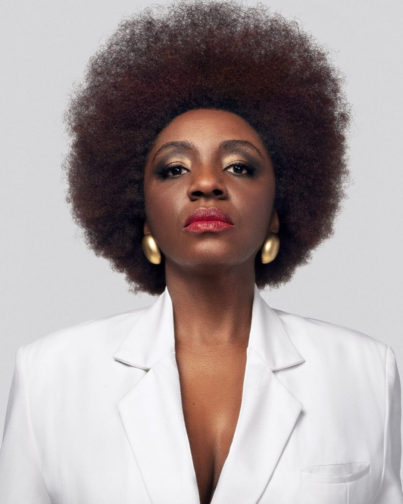

Mulheres e Tecnologia
Nos últimos cinco anos, a participação das mulheres no mercado de tecnologia cresceu 60%, de acordo com os últimos dados apresentados pelo Cadastro Geral de Empregados e Desempregados (Caged). Quem pensa que o mercado de tecnologia é dominado por homens, certamente não está ciente do histórico de importância das mulheres na tecnologia.
Conheçam algumas mulheres que fizeram história na tecnologia:
- Ada Lovelace, criadora do primeiro algoritmo da história;
- Dorothy Vaughan, afro-americana que trabalhou na NASA e fez grandes feitos na década de 1950 dentro da corporação;
- Grace Hopper, que inventou o primeiro compilador e levou ao desenvolvimento do COBOL;
- Margaret Hamilton, diretora do laboratório do MIT responsável pelo desenvolvimento do programa de voo utilizado pelo projeto do Apollo 11 – a primeira missão que nos levou para a lua.
Vamos falar sobre Nina Silva, uma mulher brasileira que tem feito história na tecnologia.
Quem é Nina Silva
Marina Silva, mais conhecida como Nina Silva é executiva de TI, palestrante e escritora. E além disso é empresária e mentora de negócios e colunista da MIT Sloan Review e UOL Economia. Ela está entre as 100 pessoas afrodescendentes com menos de 40 anos mais influentes do mundo.
CEO e uma das fundadoras do Movimento Black Money, em 2019 Nina foi considerada pela revista Forbes uma das 20 Mulheres Mais Poderosas do Brasil.
Atuação no Mundo
Nina Silva criou o Movimento Black Money, que é um hub de inovação para inserção e autonomia da comunidade negra na era digital junto a transformação do ecossistema empreendedor negro,com foco em comunicação, educação e geração de negócios pretos.
A plataforma de afroempreendedorismo, a qual conecta pessoas negras do marketplace e consumidores, mas também abre oportunidades de educação, crédito e desenvolve planos de inclusão racial para empresas parceiras.
